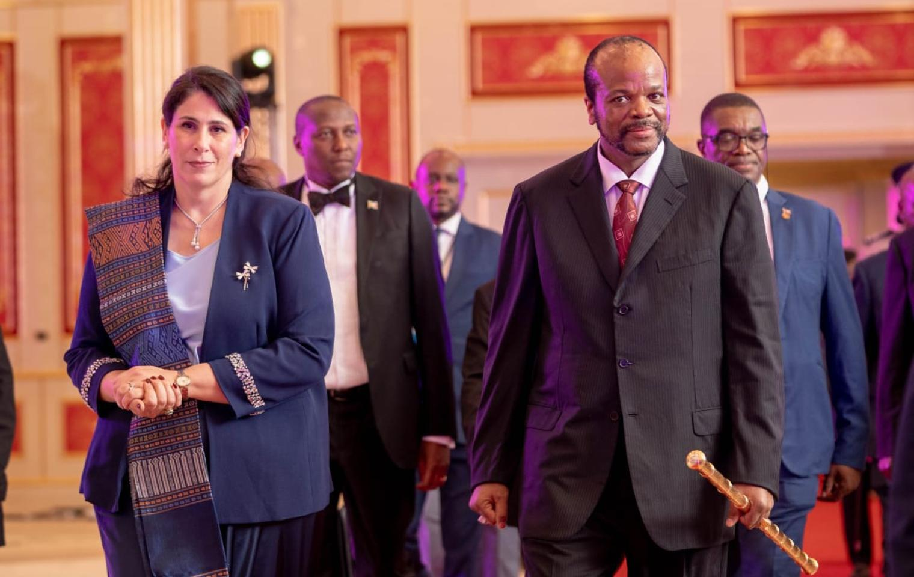
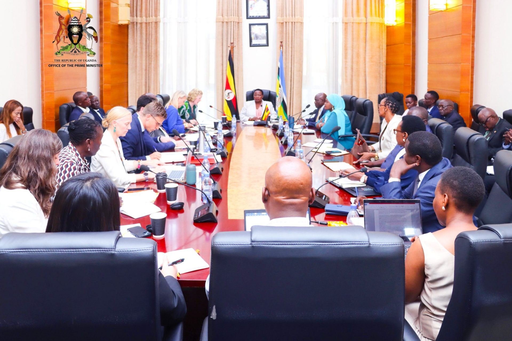
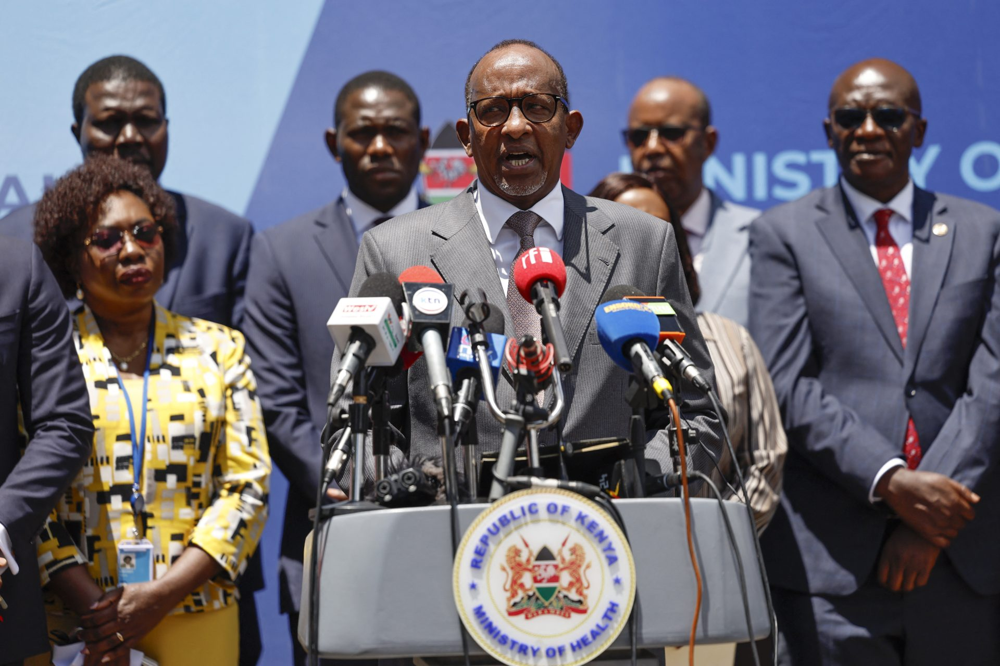
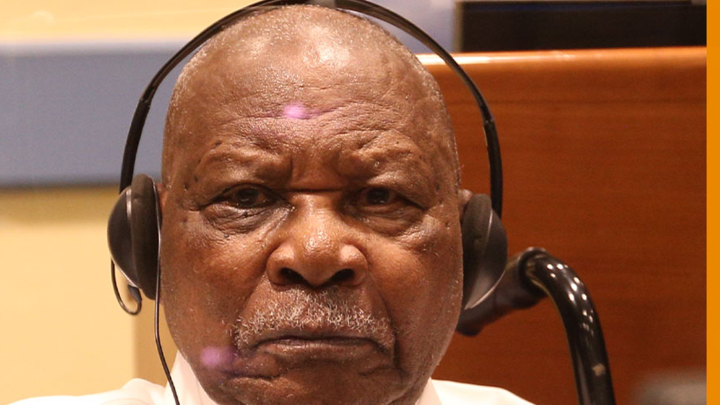
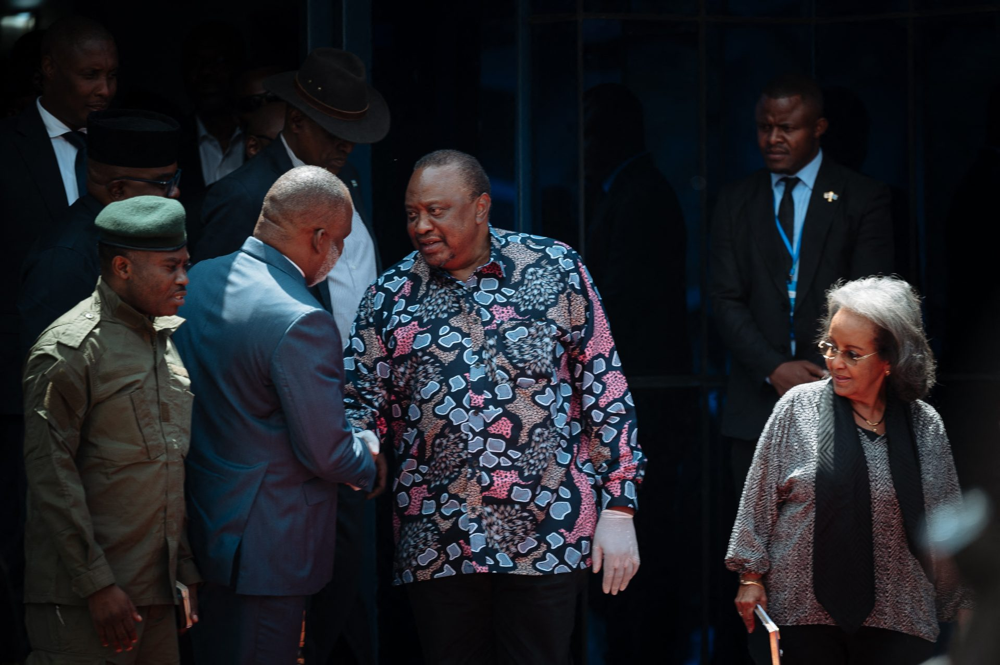
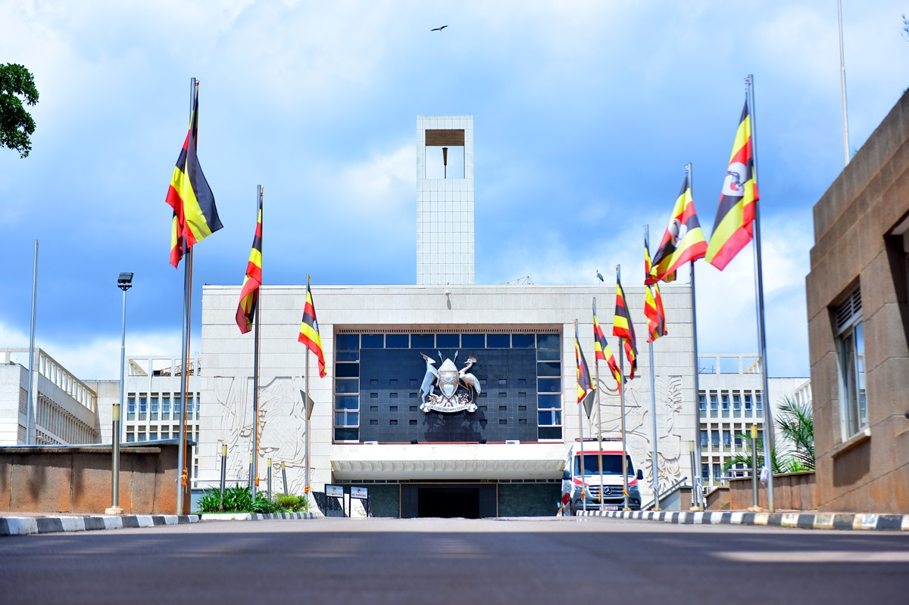

MPs Want Safeguards for Government’s Shs723.4 Billion Investment in Dei BioPharma
MPs Want Safeguards for Government’s Shs723.4 Billion Investment in Dei BioPharma
Africa

Deputy Chairperson participated in the opening ceremony of the African Seed SummitTRUTH. INSIGHT. IMPACT.
MPs Want Safeguards for Government’s Shs723.4 Billion Investment in Dei BioPharma

Deputy Chairperson participated in the opening ceremony of the African Seed Summit
PM Nabbanja meets Development Partners ahead of National Partnership Forum
Kenya Reports it first Ebola case.
Félicien Kabuga, the Rwandan businessman accused of financing and fueling the 1994 Genocide against the Tutsi, has died in detention in The Hague, Netherlands, while awaiting provisional release to a country willing to receive him.Kabuga died on Friday while hospitalized under the custody of the United Nations Detention Unit. Authorities in the Netherlands immediately opened the mandatory investigations required under Dutch law, while the President of the International Residual Mechanism for Criminal Tribunals ordered a full inquiry into the circumstances surrounding his death. Today
Corneille Nangaa (2nd L), coordinator of the AFC/M23, shakes hands and speaks with former Kenyan president Uhuru Kenyatta (C), head of the African Union facilitators delegation, as former Ethiopian president Sahle-Work Zewde (R) looks on after a meeting, in Goma, eastern Democratic Republic of Congo, on October 5, 2026. A delegation from the African Union (AU) mediation mechanism on the conflict in eastern DRC arrived in Goma on Monday, where a meeting with senior officials of the anti-government armed group M23 is scheduled, AFP journalists observed The inaugural African Chiefs of Defence Forces Conference on Military Operations Other Than War has opened in Kampala, bringing together defence and military operations experts to discuss how African countries can strengthen their response to emerging and non-traditional security threats.
The conference brings together participants from more than 18 countries, African Union regional bodies, and Force Commanders from United Nations and African Union peace support missions.
The inaugural African Chiefs of Defence Forces Conference on Military Operations Other Than War has opened in Kampala, bringing together defence and military operations experts to discuss how African countries can strengthen their response to emerging and non-traditional security threats.
The conference brings together participants from more than 18 countries, African Union regional bodies, and Force Commanders from United Nations and African Union peace support missions.

The Parliament of Uganda is responsible for making laws, approving government expenditure, scrutinising government programmes and representing citizens from all regions of the country.
Members of Parliament debate national issues, approve budgets and oversee public institutions to promote transparency and accountability.